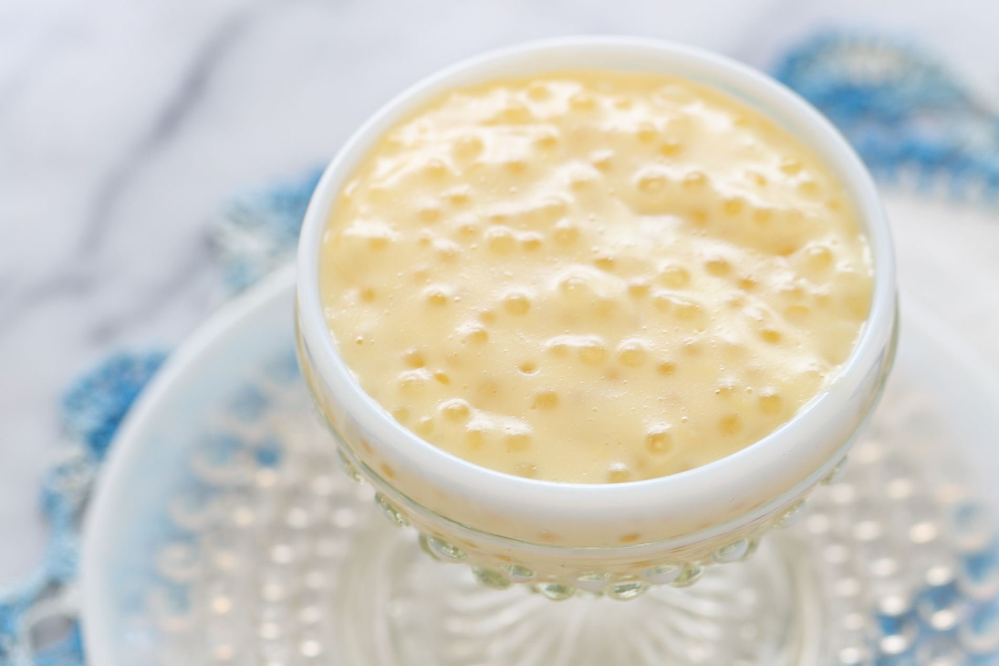

Tapioca Pudding

One of my favorite desserts growing up was tapioca pudding.
You don't see it that much anymore. Kids get pre-made puddings
from the grocery store. My parents don't make it that often as
it requires too much (for them) careful stirring while the
tapioca cooks.Yet, tapioca pudding is one of those comfort foods
that conjures up happy childhood memories. It's actually really
easy to make.
This is a second paragaph to fill space and use as filler which
lets me practice using seperate paragraphs to talk about pudding.
This is the end of my pretend paragraph.
Ingredients
- 1/2 cup small pearl tapioca (do not use instant tapioca)
- 3 cups whole milk (or skim milk with cream added)
- 1/4 teaspoon salt
- 2 large eggs
- 1/2 cup sugar
- 1 teasopoon vanilla extract
Directions
Cook the tapioca
Combine tapioca, milk, and salt in 1 1/2 quart pan on medium-high heat.
Stir while bringing to a bare simmer. Lower the heat and cook, uncovered,
at the lowest possible heat, adding sugar gradually until the tapioca pearls
have plumped up and thickened.
Depending on the type or brand of tapioca you are using (and if you've
pre-soaked the tapioca as some brands call for), this could take anywhere
from 5 minutes to 45 minutes of cooking at a very low temperature.
Stir occasionally so the tapioca doesn't stick to the bottom of the pan.Temper the eggs with a little hot tapioca:
Beat eggs in a separate bowl. Whisk in some of the hot tapioca very slowly
to equalize the temperature of the two (to avoid curdling).Add the tempered eggs to the pudding, cool, then add the vanilla:
Slowly add the eggs to the tapioca in the pan. Increase the heat to medium
and stir for several minutes until you get a thick pudding consistency. Do not
let the mixture boil or the tapioca egg custard will curdle. Cool 15 minutes.
Stir in vanilla. Serve either warm or chilled.